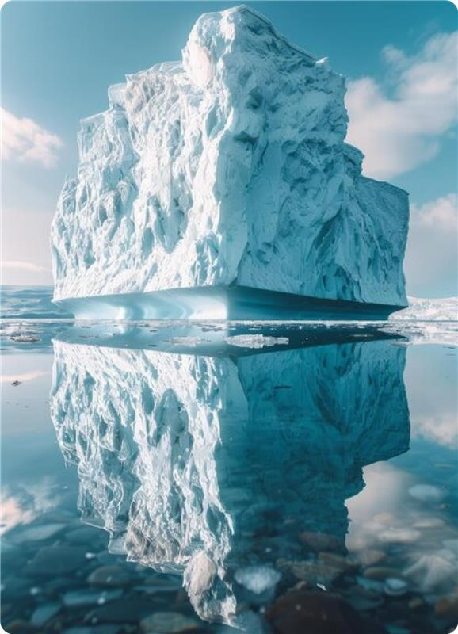

O que é Fata Morgana :
A aparência conhecida como Fata Morgana é uma miragem complexa e fascinante que ocorre devido a condições atmosféricas específicas, especialmente em ambientes marítimos ou desertos. Este efeito óptico resulta da refração da luz em camadas de ar com diferentes temperaturas e densidades, criando imagens distorcidas e surrealistas de objetos distantes.
.png)
A Fata Morgana é uma forma de miragem que se caracteriza pela perda e multiplicação de imagens de objetos, como ilhas, barcos ou penhascos, que parecem flutuar ou se elevar acima da linha do horizonte.Esse fenômeno é mais comum em áreas onde há uma grande diferença de temperatura entre as camadas próximas à superfície da Terra.

Quem descobriu :
.png)
.png)
A aparência de Fata Morgana foi documentada e descrita por marinheiros e viajantes há séculos, mas não é possível conceber sua "descoberta" a uma única pessoa. Esse foco óptico, que cria miragens complexas e distorcidas no horizonte, é conhecido desde a antiguidade. O estudo formal desse tipo de miragem foi aprofundado ao longo dos séculos, com contribuições de cientistas que investigaram as especificações atmosféricas e ópticas, como René Descartes e Isaac Newton .
Origem:
O nome "Fata Morgana" tem origem na mitologia medieval, referindo-se à feiticeira Morgana, meia-irmã do Rei Artur, que era conhecida por suas ilusões e transformações. A associação com a magia e a ilusão reflete a natureza enganosa desta esfera óptica.
Como ocorre o efeito da Fata Morgana :
O efeito Fata Morgana ocorre quando uma camada de ar quente se sobrepõe a uma camada de ar mais frio. Essa versão térmica provoca variações na densidade do ar, fazendo com que os raios de luz sejam desviados em trajetórias irregulares. Como resultado, os objetos distantes podem aparecer esticados, comprimidos ou até mesmo invertidos. Costuma ocorrer Alto-mar, vales de montanha, mares árticos, superfícies geladas da Antártida de manhã, geralmente após uma noite fria

Condições Favoráveis :
Implicações práticas :
A Fata Morgana pode ter sérias implicações para a navegação marítima e terrestre. As ilusões criadas podem confundir pilotos e marinheiros, tomando decisões erradas que podem resultar em acidentes. Por exemplo, há teorias que sugerem que o naufrágio do Titanic pode ter sido influenciado por essa influência. Um dos locais mais famosos para observar a Fata Morgana é o estreito de Messina, entre a Calábria e a Sicília. Além disso, relatos recentes do litoral brasileiro mostram como o efeito visual pode criar efeitos impressionantes, como o "sumiço" do horizonte.Este fenômeno não apenas fascina cientistas e navegadores, mas também inspira lendas e histórias ao longo da história humana.
Exemplos:

Referência :
Fata Morgana – Wikipédia, uma enciclopédia livre. Disponível em: https://pt.wikipedia.org/wiki/Fata_Morgana . que é o efeito Fata Morgana? | Oráculo. Disponível em: https://super.abril.com.br/coluna/oraculo/o-que-eo-efeito-fata-morgana . Fata Morgana - Ecofalante. Disponível em: https://ecofalante.org.br/filme/fata-morgana .
João Rafael Por Laura Por Raiany Por Raul